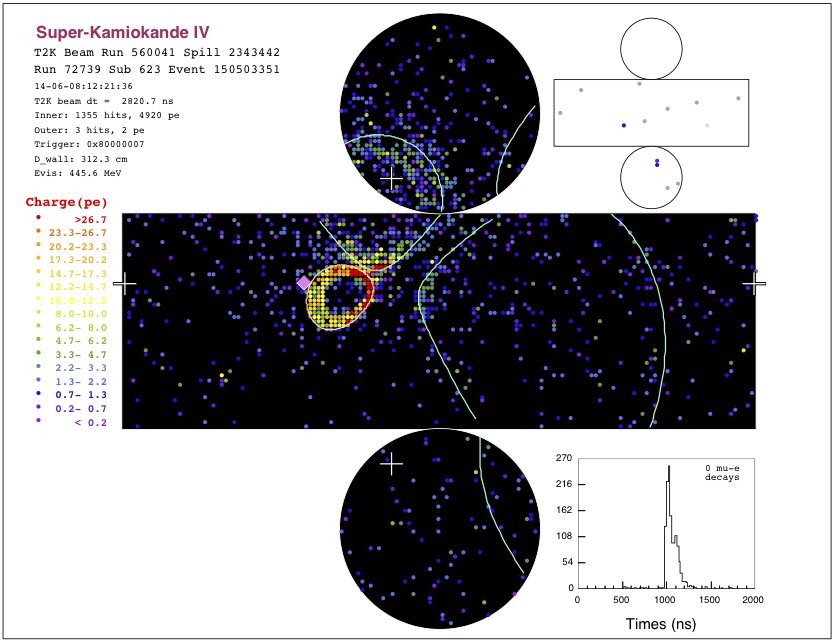

On May 26th the first event in anti-neutrino beam mode was observed by the near detector (ND280) of T2K. This is the first ever anti-neutrino beam event in Japan and is the result of the tireless effort of all the members of the T2K collaboration. Moreover, on June 8th 2014, the first fully contained anti-neutrino event was detected in T2K's far detector, Super-Kamiokande. These are the first steps into an exciting time for T2K that will hopefully get us closer to measuring CP violation in the lepton sector.

First event in Super-Kamiokande in anti-neutrino beam mode